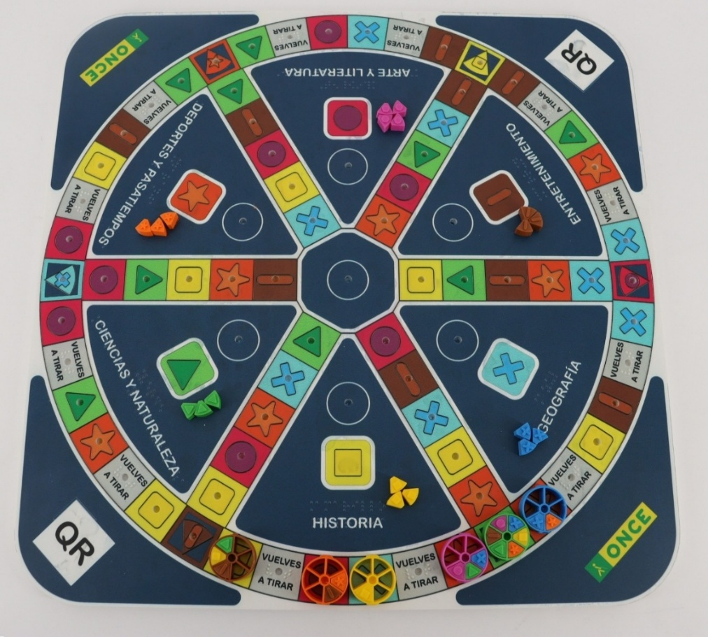
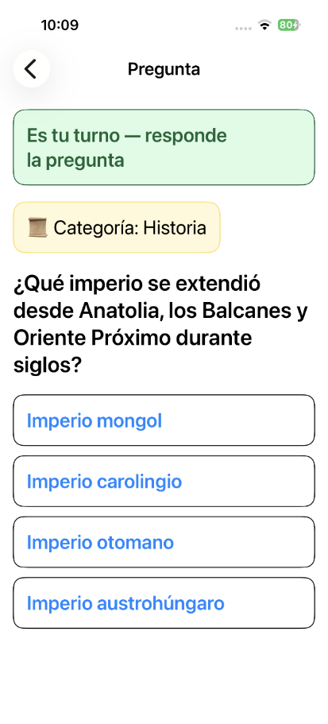
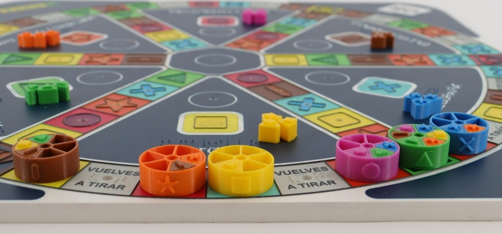

Diseño y desarrollo de un modelo accesible para juegos de preguntas y respuestas
Aplicación al Trivial

Contexto y problema
El trabajo parte de un contexto muy concreto: Los juegos de preguntas y respuestas son especialmente interesantes porque combinan muchas capas de información: El problema es que estos elementos se han diseñado desde una lógica visual.
Barreras principales:
Referencias: Bolesnikov et al. (2022); Léste y Farbiarz (2023); Sousa et al. (2022).
Objetivos del TFM
Objetivo general
Definir y validar un modelo accesible para juegos de preguntas y respuestas mediante un sistema híbrido físico-digital.
Objetivos específicos
- Definir requisitos de accesibilidad y usabilidad.
- Diseñar un modelo aplicable al componente digital y al componente físico.
- Desarrollar una prueba de concepto funcional.
Metodología
El trabajo adopta un enfoque cualitativo y exploratorio: El proceso parte de una revisión bibliográfica. Continúa con el análisis del contexto y la identificación de necesidades. A continuación se revisa el estado de la cuestión. Y, a partir de ahí, se diseña la propuesta de intervención de forma iterativa. La propuesta se materializa en una prueba de concepto funcional. Y el trabajo deja definida una metodología para su futura validación con usuarios reales.
Referencias: ISO 9241-210; Wobbrock y Gajos (2017).
Necesidades detectadas
Del análisis realizado se identifican cinco necesidades estructurales:
- N1. Acceso autónomo al contenido textual
- N2. Escalabilidad y sostenibilidad del contenido
- N3. Comprensión táctil de la mecánica
- N4. Experiencia de juego compartida
- N5. Integración físico-digital
Marco teórico y estado de la cuestión
La propuesta se fundamenta en varios marcos conceptuales.
Por un lado, el derecho al ocio y a la participación social, el diseño universal, el diseño inclusivo, el diseño centrado en las personas y el Ability-Based Design. Para el componente digital se toman como referencia las WCAG 2.2. Para el componente físico resulta clave la interacción tangible,
El estado de la cuestión permitió identificar tres enfoques principales:
Las adaptaciones físicas son conocidas, pero presentan límites de escalabilidad. Los juegos específicos pueden ofrecer buena interacción táctil, pero corren el riesgo de generar experiencias separadas. Las soluciones híbridas son prometedoras, aunque todavía están poco consolidadas en juegos de preguntas y respuestas.
Referencias: Center for Universal Design; ISO 9241-210; W3C; Hornecker y Buur; Wobbrock y Gajos; Sousa et al.
Propuesta de intervención
El componente digital gestiona aquello que tiene más densidad informativa y requiere actualización.
Gestiona las partidas y su estado, presenta preguntas, respuestas y categorías, permite actualizar el contenido y las reglas, y es compatible con lectores de pantalla.
El componente físico mantiene la interacción física y social del juego.
Aporta la representación espacial del tablero, diferencia las categorías mediante el tacto, permite manipular fichas y obtener quesitos, y mantiene la dimensión social y compartida del juego de mesa.
Necesidades y respuesta de diseño
-
Necesidad uno: acceso al contenido textual. -
Necesidad dos: escalabilidad del contenido. -
Necesidad tres: comprensión táctil de la mecánica. -
Necesidad cuatro: experiencia de juego compartida. -
Necesidad cinco: integración físico-digital.
Funcionamiento del modelo híbrido
El jugador tira el dado, mueve la ficha y explora el tablero para identificar su posición. Reconoce la categoría correspondiente a esa casilla. El componente digital presenta la pregunta y las opciones de respuesta de forma accesible. - El jugador responde.
El sistema valida el resultado y lo comunica al jugador. El progreso se representa en el componente físico mediante la ficha o los quesitos.
Prueba de concepto . Vídeos
Componente físico
Componente digital
El prototipo permite comprobar la viabilidad técnica del modelo.
Autoría del trabajo
Todo el trabajo académico ha sido desarrollado por mí.
- Investigación y revisión bibliográfica.
- Análisis de necesidades.
- Diseño conceptual del modelo.
- Definición de requisitos.
y Análisis y redacción académica.
Para materializar la prueba de concepto se contó con apoyo técnico puntual de profesionales del CTI en tareas concretas:
- Desarrollo del prototipo.
y Fabricación de elementos físicos.
Validación, limitaciones y trabajo futuro
La principal limitación es que la propuesta todavía no ha sido validada con usuarios reales. Esta validación combinaría observación de tareas, El prototipo es una prueba de concepto y no un producto industrializado. - Caso de estudio limitado a juegos de tipo Trivial.
Como trabajo futuro, sería necesario realizar la validación formal,
Conclusiones
Para concluir, recupero los objetivos planteados al inicio.
El objetivo general se alcanza: se ha definido un modelo accesible para juegos de preguntas y respuestas Los requisitos y necesidades de accesibilidad han sido identificados. Se ha diseñado una arquitectura híbrida que integra componente digital y componente físico. Y se ha desarrollado un prototipo funcional que materializa el modelo.
Comparada con la literatura revisada, la propuesta se sitúa en una línea híbrida todavía poco consolidada.
Frente a las adaptaciones físicas, mejora la escalabilidad separando el contenido textual del soporte físico. Frente a los juegos específicos, integra accesibilidad digital e interacción tangible sin generar una experiencia separada. Y mantiene una experiencia compartida entre personas con y sin discapacidad visual.
Aportaciones principales
En primer lugar, se propone un modelo híbrido para juegos de preguntas y respuestas. En segundo lugar, se integra accesibilidad digital e interacción tangible dentro de una misma arquitectura. En tercer lugar, la propuesta responde directamente a las necesidades identificadas durante el análisis. Y, finalmente, el trabajo deja preparada una base metodológica para validar el modelo en futuras fases.
Gracias


